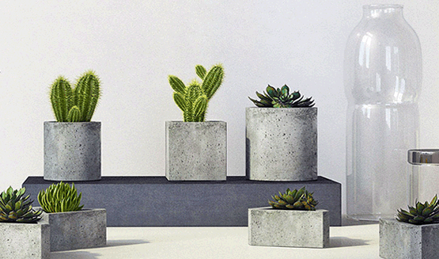

Hoạt động đặc biệt tại Hạt Mầm Lam
NGÀY 26/03/2018
[Viết dành cho bản thân Nguyên Lộc, và dành cho những người bạn đang
suy nghĩ mình có nên chấm dứt một mối quan hệ nào đó]
Nhờ có được lòng tin từ một số bạn bè, anh chị em, Nguyên Lộc dạo
gần đây được lắng nghe rất nhiều câu chuyện về sự chia ly. Có người
đã quyết định ly dị, có người thì đang phân vân coi có nên không
- đây là trong một cuộc hôn nhân chính thức, có cam kết ban đầu.
Trường hợp còn lại rất nhiều, rất nhiều những mối quan hệ yêu đương
cũng đã hỏi Nguyên Lộc là có nên chia tay nhau hay không? Vì sau
một thời gian tìm hiểu, cảm thấy không hợp, không ổn khi đi cùng
nhau; tình yêu hay mối quan hệ này không đủ lớn mạnh, không đủ
nuôi dưỡng và bao dung cho người trong cuộc.
Dù có những nguyên tắc đạo đức nghề nghiệp nhưng nhà tâm lý học
không phải là nhà đạo đức. Nên hiểu rằng việc khuyên người đó ly
hôn hay chia tay không có quan trọng. Quan trọng là chính bản thân
họ, lúc quyết định, lựa chọn đó có cảm thấy ổn với quyết định của
mình.
Nói theo cách của nghiệp, tất cả mọi chuyện đều có tiềm năng của
nó. Ly dị có thể tốt hoặc xấu hơn, ở lại cũng vậy có thể tốt hoặc
xấu hơn, không có gì chắc chắn rằng làm cái này hay làm cái kia
sẽ tốt. Tốt hay xấu phụ thuộc vào nghiệp của bản thân mình ở phía
sau.
Đời người có rất nhiều duyên phận, nên đôi khi duyên phận với
người này đến đây đã chấm dứt thì mình cũng nên dừng lại, vốn tình
yêu là thứ chẳng thể cưỡng cầu, tranh đoạt.

Nguyên Lộc cũng có vài mối tình, có mối tình đậm sâu, lâu dài cũng
đã hơn 5 năm, nhưng đôi khi nghĩ lại vẫn suy nghĩ xem mình có nên
tiếp tục.
Tiếp tục là cả hai cùng đi chứ không phải chỉ mình mình cố gắng.
Nếu một mình cố gắng, thì đến lúc không cố gắng được nữa thì buông
tay thôi, bất tất phải tự làm khổ bản thân mình vì sự bám chấp.
Khi người được chúng ta đưa ra đề nghị chia tay hay ly hôn có thể
họ sẽ phủ nhận, tức giận, mặc cả.. một số ít trong đó chấp nhận.
Người ta thường mặc cả dựa trên sự liên kết còn sót lại. Nếu sống
chung với nhau có con thì con cái là sợi dây liên kết để níu kéo.
Nếu cùng nhau làm việc gì đó trong dự án, hay công ty thì dự án,
công ty là thứ còn lại của hai người.
Thật ra thì con cái có duyên phận của nó. Nếu số phận nó chỉ có
hoặc ba, hoặc mẹ thì có lẽ chúng ta nên để cho nó như thế. Công
ty hay dự án cũng vậy, không có mình thì nó vẫn tồn tại, nó không
phát triển được thì cứ sụp đổ. Mình còn thì việc còn, chuyện đó
quan trọng hơn, bây giờ làm không được, sau này ổn hơn sẽ làm được,
mình cần ổn trước cái đã.
Có rất nhiều phụ nữ ngậm đắng nuốt cay, vì con cái, vì gia đình
mà cam tâm nhẫn chịu. Đàn ông mở miệng thì nói vì con vì cái, nhưng
sau đó thì họ chẳng bao giờ thay đổi, họ vẫn chứng nào tật nấy,
họ vẫn lang chạ, vẫn hành hạ phụ nữ bằng sự tàn nhẫn của họ thì
việc ở lại với nhau quả là khủng khiếp. Nếu người mẹ sống trong
sự uất hờn, tủi nhục như vậy thì con cái liệu có hạnh phúc? Điều
gì đảm bảo là đứa bé nhìn thấy cha thấy mẹ nó thì nó hạnh phúc
hơn là chỉ thấy một trong hai người? Đôi khi đứa trẻ chính là người
mong muốn chia ly hơn cả. Vẫn là tiềm năng của nghiệp lực.
Nguyên Lộc